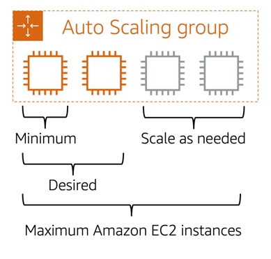

Issue: Businesses face varying workloads. Buying hardware for peak loads wastes money during low demand, while buying for average loads risks poor customer service during peaks.
Analogy: Running a coffee shop with only one barista during peak hours results in long lines, while hiring extra staff during low-demand hours wastes money.
AWS enables you to adjust computing resources dynamically based on demand.
Outcome: You only pay for what you use, ensuring happy customers during peak times and cost savings during slow periods.
Function: Automatically adds or removes EC2 instances based on demand.
Real-World Analogy: Adding more baristas when the line grows (dynamic scaling) or predicting busy hours (predictive scaling) to prepare staff in advance.
Websites that struggle to load often face increased traffic beyond their handling capacity. This is similar to a coffee shop with only one barista and a long queue of customers.
Amazon EC2 Auto Scaling enables automatic addition or removal of EC2 instances based on demand, ensuring availability.
Types of Scaling:
Scaling Up: Increasing the power of existing machines.
Analogy: Giving a café worker a larger coffee machine won't necessarily help serve customers faster.
Scaling Out: Adding more machines or workers to distribute the load.
AWS Advantage: EC2 Auto Scaling automatically adjusts resources based on demand.
Analogy: Like a food delivery service managing drivers based on demand.
With EC2 Auto Scaling, new instances are added as demand increases and removed when demand drops, ensuring cost efficiency.
Example configuration:
EC2 Auto Scaling ensures applications remain available while minimizing costs.
Because Amazon EC2 Auto Scaling uses EC2 instances, you pay only for what you use, reducing costs while maintaining performance.
Amazon EC2 Auto Scaling provides a cost-effective and efficient way to handle fluctuating workloads.